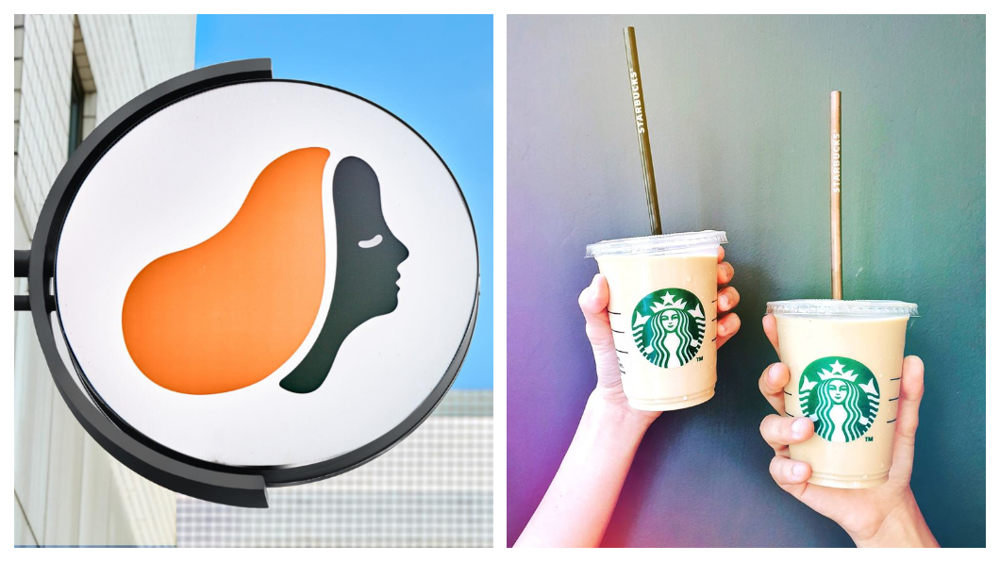

燉星巴克假日總是生意興隆，許多人喜歡到咖啡廳吃早午餐，安靜享受悠閒的時光，
不過近年國內連鎖咖啡廳的龍頭似乎要換人做了，路易莎目前全國總店數有489間，
甚至明年目標是突破540間分店。
不過星巴克表示，2018年營收達110億元，領先其他連鎖咖啡通路，仍是最賺錢的咖啡店。
路易莎2006由黃銘賢創立，2007年才在民生東路成立第一間門市，
13年後的今天卻成為全國店數最多的連鎖咖啡廳，目前全台門市已有489間，
比星巴克、85度C的店數還多。2020年路易莎也希望能繼續穩定展店，
達到540間門市，營收希望突破50億大關。
星巴克下周四(1/2)將收掉已經開業20年的中山門市，到今年為止，
星巴克在全台總共有480間店。星巴克表示，2018年營收達110億，
仍然是大幅領先其他連鎖咖啡通路。不過近3年來，星巴克的獲利金額也在年年下滑。
根據商周報導，路易莎的店面多元化也受到年輕族群的喜愛，
許多店面依照客源及商圈特性，加入書店區或親子空間，
這也讓在日本多和星巴克合作的蔦屋書店，來台後願意改和路易莎合作。
